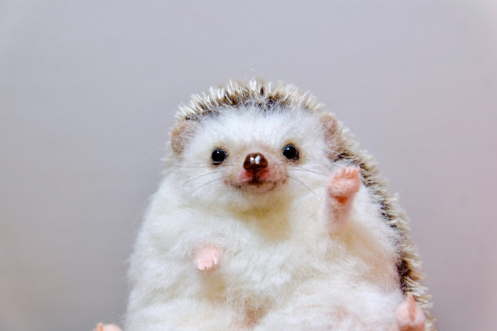

羊毛フェルトでつくった動物たちと
おうちカフェにほっこり癒しと幸せ気分を
羊毛フェルト作家 さくだゆうこ（yucoco cafe）
動物さんたちのご紹介
ひと針ひと針、羊毛を刺してかたちにした動物さんたち。がま口やストラップもふくめて gallery ページにならべています。
Instagram でも作品を紹介しています
イベント・新作のお知らせは Instagram でお届けしています。


作品をお迎えいただけるお店
その日にお迎えいただける子は、それぞれのお店でご覧いただけます。
著書『羊毛フェルトでつくる 動物と雑貨のある暮らし』(日本ヴォーグ社) ／ ヴォーグ学園講師 ／ 本屋大賞ノミネート作品の装丁を担当 これまでのあゆみを見る →